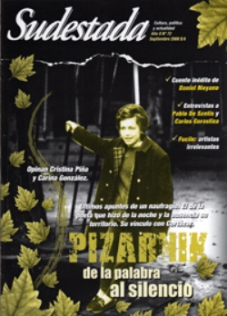

Buscar
Alejandra Pizarnik: de la palabra al silencio
"No quiero ir más que hasta el fondo". Ese fue el último verso que Alejandra Pizarnik dejó en el pizarrón de su departamento. Antes, la autora de La condesa sangrienta desnudó sus fantasmas y obsesiones a través del estigma de sus versos, oscuros y lánguidos. Una historia de naufragio, ausencia y la búsqueda interminable de la palabra exacta.
Edición N° 72
Septiembre 2008
Revista bimensual
Comprar edición impresaSumario
- Alejandra Pizarnik: de la palabra al silencio
- Los que no rompen nada
- "Siempre creemos que la verdad está en el secreto"
- "En el teatro actual hay un desprecio por lo político"
- Bajo el influjo de Farabundo Martí
- Último tren a Escalada
Compartir Articulo
1. ¿Dónde está el silencio? ¿En la otra orilla está el silencio? ¿Dónde? ¿En el medio del océano? ¿Lejos de todos? ¿En una noche cualquiera de París está el silencio? ¿En Buenos Aires y sus noches? Alejandra camina por alguna recóndita calle de París o Buenos Aires, o sobre la noche misma, y tal vez se hace preguntas. ¿En la muerte está el silencio?
Un tránsito con movimientos oscilatorios y lleno de preguntas. Quizás Alejandra se las habrá hecho aquella noche de septiembre de 1972. Tal vez fue ese errar, ese recorrer y extraviarse, el que derivó en la búsqueda del silencio como el lugar de descanso, como el espacio para estar a salvo. Una dosis de cincuenta pastillas de Seconal sódico, un sueño permanente. De todas las formas posibles de morir, de darse muerte, excederse con pastillas para dormir puede ser lo más parecido a acariciar un sueño eterno, un silencio arrullador. La muerte ha restituido al silencio su prestigio hechizante, podría decirle una de sus muñecas que la mira, entre las otras muñecas maquilladas como ella, en ese escenario creado para su última función.
Mi sueño es un sueño sin alternativas y quiero morir al pie de la letra del lugar común que asegura que morir es soñar, había escrito en 1964, siete años antes. Como un mantra, como un presagio aparece el sueño, tanto en su acepción de anhelar algo, como de dormir. Y también aparece el morir al pie de la letra.
El departamento de la calle Montevideo (y una madrugada con la noche que se extiende). En el departamento, sus muñecas (que Alejandra maquilló para la escena). Alejandra y un escrito en una pizarra: "No quiero ir más que hasta el fondo". La escritura, siempre. Hasta el final. Unas últimas palabras dibujadas como búsqueda del ideal y del silencio, y su muerte temprana, para algunos anunciada, provocada por una sobredosis de barbitúricos.
Es septiembre. No se percibe ningún ruido en el interior del departamento de la calle Montevideo. Afuera, la calle y el amanecer aportarán su ración. Adentro, silencio.
Pero no siempre Alejandra anheló el silencio.
2- ¿No es acaso poeta quien no solo escribe sino que se apropia de cada expresión y crea un mundo tangible al decir de los sentidos? ¿Podrá la poesía crear mundos? ¿Qué tiene para decir ese mundo que es la poesía, de los otros? Alejandra reunió su significado del mundo, ese que miró, olió, palpó. Y lo transformó en palabras; un lugar -el poema- en donde otros solitarios se reúnen, se reconocen (en tanto afuera llueve y es invierno).
Desde adolescente tuvo la seguridad de que quería ser poeta. No escritora; poeta. En su búsqueda de un lugar que contuviera sus ganas de escribir y de conocer el mundo literario, que ayudara a desarrollar todo ese impulso creativo y de expresión de su sensibilidad, pasó por diferentes carreras universitarias. Osciló entre Filosofía, Periodismo, Letras. No faltaron otros buceos en su búsqueda, que incluyó clases de pintura con el pintor surrealista Batlle Planas. Después de estas incursiones fallidas, llegarían otros recorridos, otros vagabundeos, pero nunca retornaría a la educación formal. Impulsos y sensaciones encontradas se debatían en ella.
En Alejandra, probablemente más que en cualquier otro mortal, Eros y Tánatos alternaron sus pulsiones vitales con osadía. Eros, pulsión de la vida, de la creación y del erotismo, y Tánatos, pulsión de muerte -no en tanto violencia, sino como un deseo paulatino de abandonar la lucha de la vida y volver a la quietud- constituyeron su obra y su existencia.
Flora Alejandra Pizarnik había nacido el 29 de abril de 1936 en Avellaneda. Sus padres, de origen ruso-judío, habían venido dos años antes desde Rovne, poblado de la Europa del Este.
Habitar un mundo literario, de palabras, fue su primer deseo. La infancia de la poeta estuvo marcada por las noticias que llegaban desde esa remota referencia que para ella era Europa. Alejandra no era Alejandra todavía, sino Flora, o tal vez Blímele, como la llamaban en su niñez de escolar. Mientras transitaba por los pasillos de una escuela judía de Avellaneda, y océano de por medio, gran parte de su familia moría, víctima del nazismo, durante la Segunda Guerra Mundial. La palabra y el silencio; la vida infantil, y las noticias de un exterminio. A través del asma y la tartamudez, la niña Flora, o Alejandra, expresaba sus dolencias de alma sensible...
(La nota completa en la edición gráfica de Sudestada Nº72 - Septiembre 2008)
Comentarios
Nadia Fink y Mariano Garrido
Articulos más vistos


LIBRERÍA SUDESTADA

Colección infantil

Distribuidora de Libros

Suscripción

Sudestada en URUGUAY

Otros articulos de esta edición
 Entrevista con Carlos Gorostiza
Entrevista con Carlos Gorostiza
"En el teatro actual hay un desprecio por lo político"
Figura emblemática del teatro argentino, Carlos Gorostiza da cuenta de su historia al compás de los principales acontecimientos sociales y ...
 Entrevista con Bruno Veronese
Entrevista con Bruno Veronese
Último tren a Escalada
Ferroviario desde la cuna, abrazador interminable de Remedios de Escalada Este, un barrio detrás de un paredón que divide las ...
 Entrevista con Pablo De Santis
Entrevista con Pablo De Santis
"Siempre creemos que la verdad está en el secreto"
París, 1889. Los doce detectives más famosos del globo se reúnen para debatir sus casos resonantes. Pero un crimen desata ...
 Levantamiento insurrecional en El Salvador
Levantamiento insurrecional en El Salvador
Bajo el influjo de Farabundo Martí
Notas sobre el desborde político campesino y el levantamiento insurreccional de 1932 en El Salvador. El papel de la Internacional ...
 Editorial
Editorial